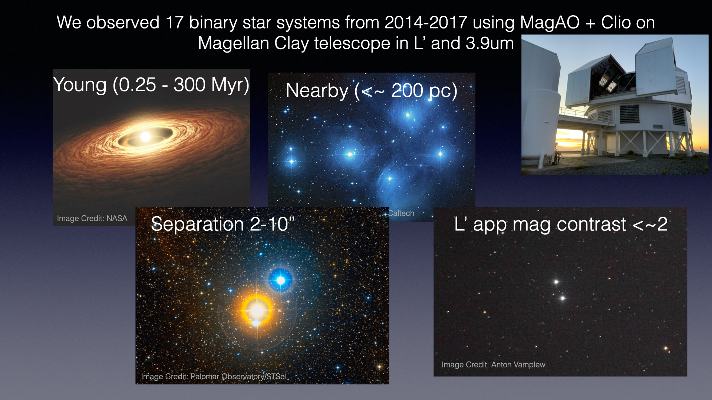

Advisor: Jared Males, University of Arizona
A difficulty in direct imaging searches for faint planet or brown dwarf companions close to their host stars is to sufficiently
subtract the point spread function of the host star from the image without also removing flux from the faint companion.
 Reference differential imaging (RDI) uses images of similar stars to build up a model reference PSF, which does not include a faint companion, which is then subtracted from the science target to reveal the flux from the companion.
Reference differential imaging (RDI) uses images of similar stars to build up a model reference PSF, which does not include a faint companion, which is then subtracted from the science target to reveal the flux from the companion.
 Angular differential imaging uses time series images of a science target in which the telescope rotator is left off throughout the observation so that the sky objects, including the planet signal, rotates while PSF and speckles stay fixed in the image plane. The PSF is then reconstructed and subtracted, leaving the planet signal behind. But it is subject to the potential of companion signal self subtraction.
Angular differential imaging uses time series images of a science target in which the telescope rotator is left off throughout the observation so that the sky objects, including the planet signal, rotates while PSF and speckles stay fixed in the image plane. The PSF is then reconstructed and subtracted, leaving the planet signal behind. But it is subject to the potential of companion signal self subtraction.
Binary Differential
Imaging (BDI) is an improvement on both methods by using binary stars to build up the model PSF.
In BDI, two stars are imaged simultaneously in the same wavelength and same isoplanatic patch at high Strehl ratios. The reference PSF for one star is then built up using Karhuenen-Luove Image Processing (KLIP), which is principle component analysis (PCA) applied to images, from images of the other, and vice versa. Rodigas et al. 2015 showed that BDI has the potential to perform better at close separations than ADI.

I analyzed a subset 17 of the target list of optimal BDI star systems developed by Rodigas et al. 2015 using a homebrewed BDI+KLIP pipeline.

KLIP is Karhunen-Loeve Image Processing, an application of Prinicple Component Analysis applied to image data. With BDI+KLIP, we use each star in the binary as the PSF reference for constructing a PSF model for the other star. We build up a PSF model then subtract the model from the target star to reveal any hidden companions that might be swamped by their host star's starlight.
I detected one possible candidate companion, which we will be following up with MagAO-X soon to confirm companion status.